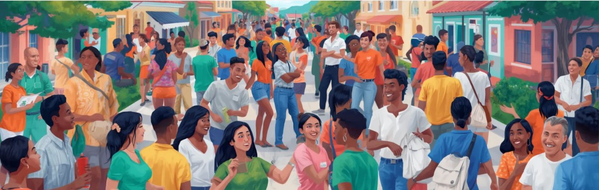

.png)
28 DE AGOSTO DE 2026
Avenida Nambu, próximo à casa de Círlene do bar
Desperdício de água na avenida Nambu
Relatado por morador. Situação que já acontece há anos, devido a torneiras e mangueiras deixadas abertas por moradores da própria rua....
28 DE AGOSTO DE 2026
Avenida Nambu, próximo à casa de Círlene do bar
Relatado por morador. Situação que já acontece há anos, devido a torneiras e mangueiras deixadas abertas por moradores da própria rua....
Trabalhar os Objetivos de Desenvolvimento Sustentável (ODS) é essencial para transformar metas globais em melhorias práticas para a vida cotidiana das pessoas. Longe de serem conceitos abstratos, essas diretrizes oferecem um roteiro claro para combater a pobreza, proteger os recursos naturais, reduzir desigualdades e incentivar o desenvolvimento econômico de forma equilibrada.

A ODS 11 (Cidades e Comunidades Sustentáveis) tem como princípio fundamental tornar os assentamentos humanos inclusivos, seguros, resilientes e sustentáveis. Para um município com as características socioambientais de Apicum-Açu, onde a dinâmica urbana se integra de forma direta aos ecossistemas costeiros, estuários e manguezais da Baixada Maranhense, a gestão do espaço urbano não é apenas uma questão de infraestrutura, mas de sobrevivência econômica e preservação ambiental. No âmbito da nossa plataforma digital, a ODS 11 ganha aplicação prática através de três pilares fundamentais:
.png)
Texto explicando o objetivo do projeto...
